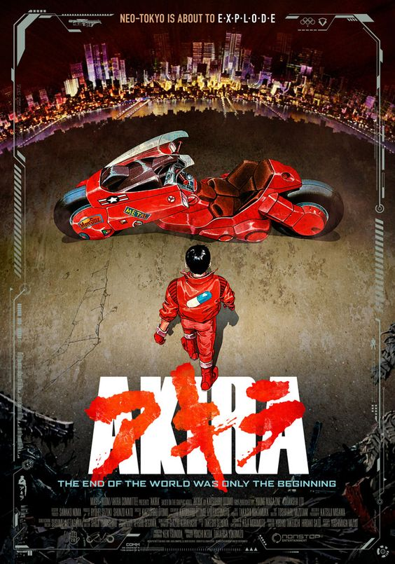

Akira
Megametrópole de Tóquio. Kaneda, líder de um gangue de jovens delinquentes, conduz a sua moto, competindo contra gangues rivais, por uma cidade devastada.

American Psycho
Patrick Bateman (Christian Bale) jovem, branco, bonito e sem nada que o diferencie de seus colegas de Wall Street. Protegido pela conformidade, privilégio e riqueza, Bateman também um serial killer, que vaga livremente e sem receios em busca de uma nova vítima.

Baby Driver
Baby é um rapaz misterioso que precisa ouvir músicas o tempo todo para silenciar o zumbido que perturba seus ouvidos. Motorista de uma gangue de criminosos, ele sonha em fazer seu último trabalho e fugir com a garota dos seus sonhos. Mas nem tudo será tão simples quanto ele gostaria.